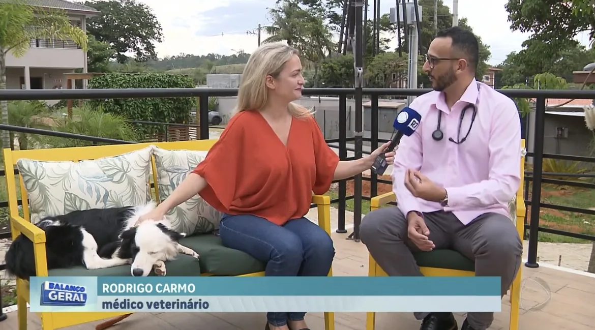

Sala de imprensa
Na mídia
Entrevistas, reportagens e participações que levam a conversa sobre medicina veterinária a outros públicos.

Entrevistas, reportagens e participações que levam a conversa sobre medicina veterinária a outros públicos.